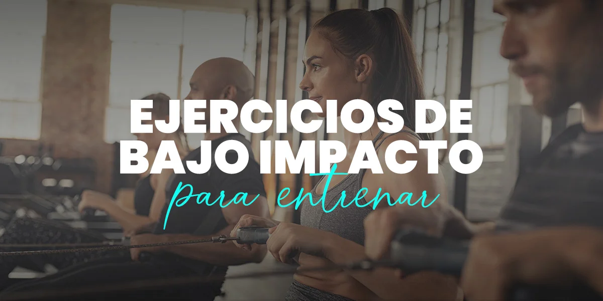

El cuerpo humano necesita movimiento. Y la mejor forma de darle movimiento al cuerpo es la actividad física. La actividad física regular puede mejorar la fuerza muscular y aumentar la resistencia. El ejercicio suministra oxígeno y nutrientes a los tejidos y ayuda a que el sistema cardiovascular funcione de manera más eficiente. Y cuando tu salud cardíaca y pulmonar mejora, tienes más energía para hacer las tareas diarias.

Hacer actividad física regularmente puede ayudarte a mantener fuertes tus habilidades para pensar, aprender y tener buen juicio con el pasar de los años. También puede reducir tu riesgo de depresión y ansiedad, al igual que ayudarte a dormir mejor.
La actividad física contribuye a la prevención y gestión de enfermedades no transmisibles, como las enfermedades cardiovasculares, el cáncer y la diabetes.
Existen diversas opciones para realizar actividad física y todo ser humano debe realizarla por lo que a continuación, se presenta la actividad física según su intensidad:
